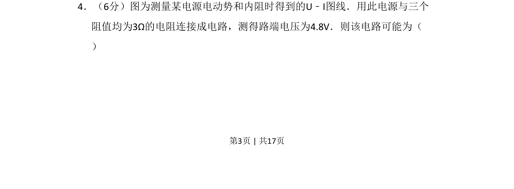
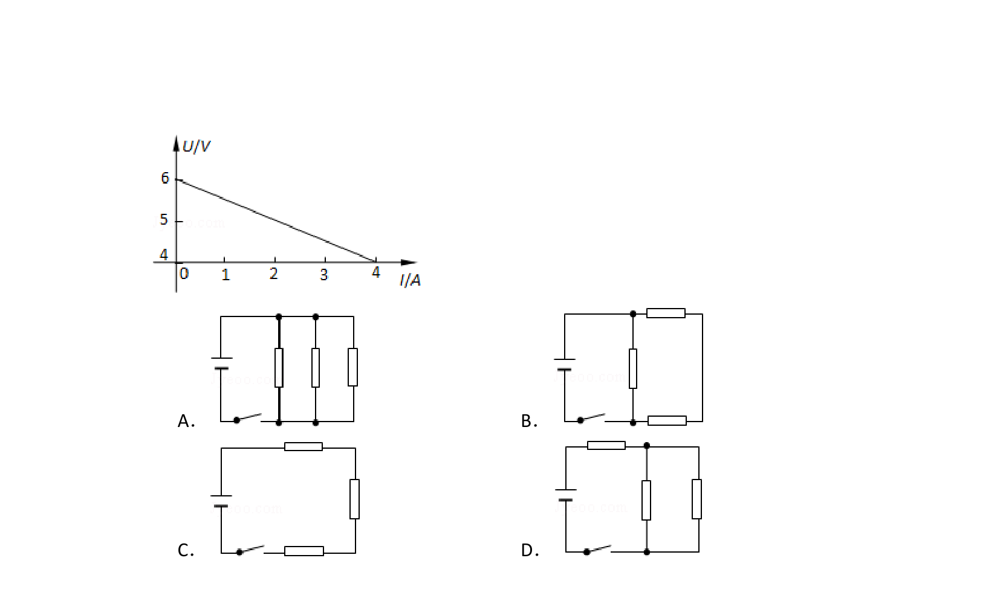
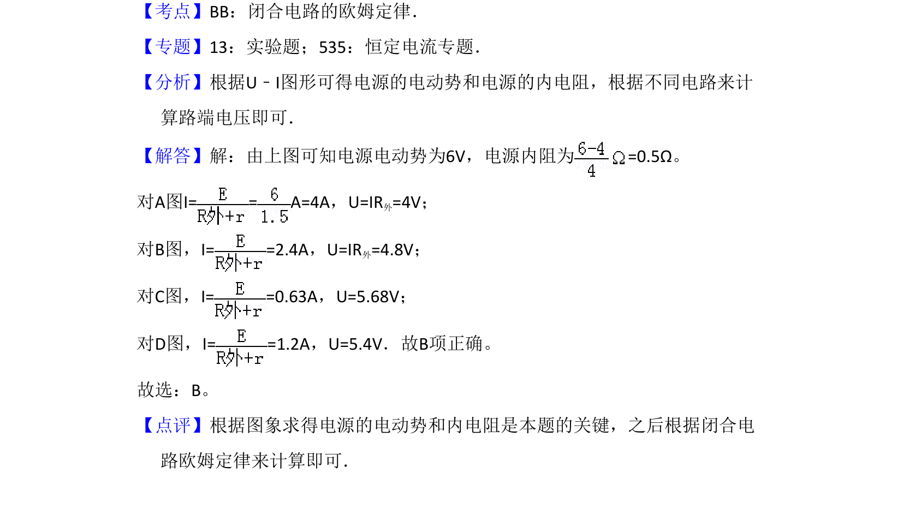

考点：闭合电路欧姆定律 电源U-I图像 串并联电路电阻计算


根据电源U-I图线求出电动势和内阻，再结合闭合电路欧姆定律判断外电路电阻连接方式。

📄 原 PDF 第 3 页：
素材/真题/吉林/2008-2024·（吉林）物理高考真题/2009年高考物理试卷（全国卷Ⅱ）（解析卷）.pdf
4．（6分）图为测量某电源电动势和内阻时得到的U﹣I图线．用此电源与三个 阻值均为3Ω的电阻连接成电路，测得路端电压为4.8V．则该电路可能为（ ）